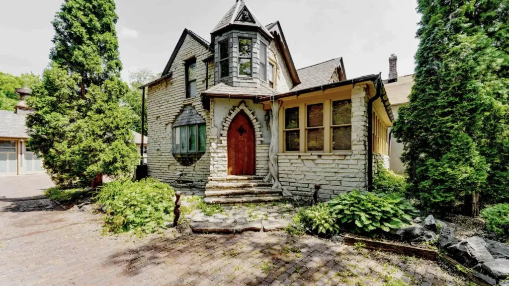
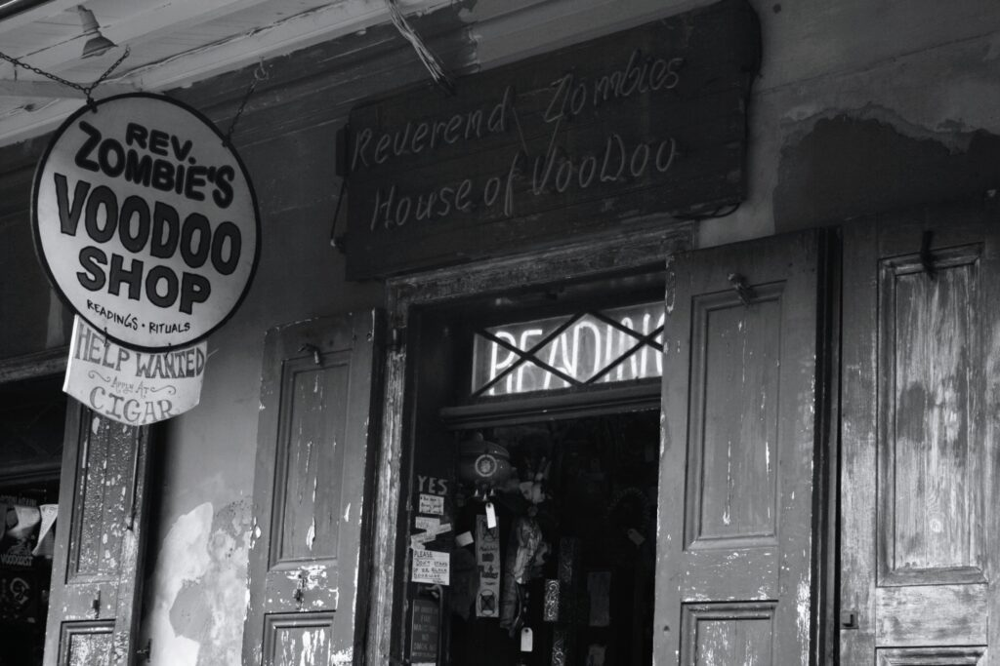

Step into the unknown with our specially curated paranormal experiences! Join fellow thrill-seekers for ghost tours,
haunted house investigations, and supernatural gatherings in some of the world’s most mysterious locations.
Whether you’re a believer or just looking for an unforgettable adventure, our events promise spine-tingling moments,
expert guides, and memories that will last a lifetime. Perfect for groups, friends, and daring solo travelers!

This is the mysterious haunted manor of St. Paul, Minnesota, click the photo to navigate to a list
of haunted places to stay!Hotel Coronado in Coronado, California is one of the many places near the West Coast to enjoy your stay
while keeping your eyes peeled for regular ghost sightings!

This Voodoo shop in New Orleans, Louisiana has been around since the beginning of US history and has been
rumored to be haunted with spirits of unknown origin.